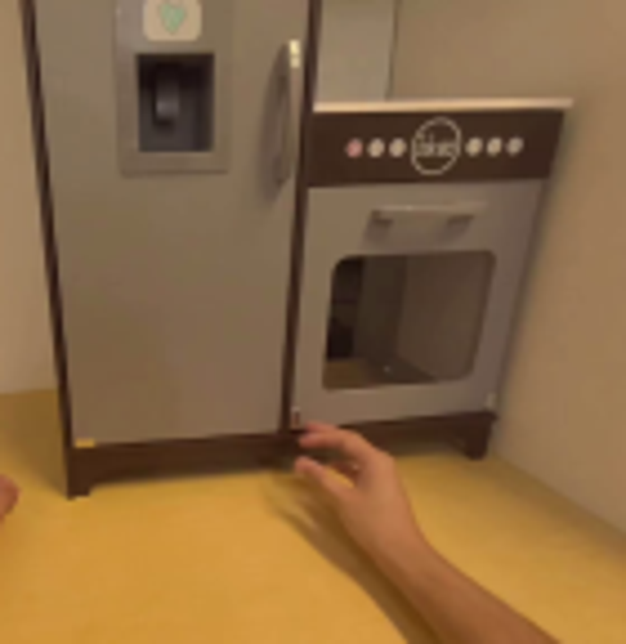
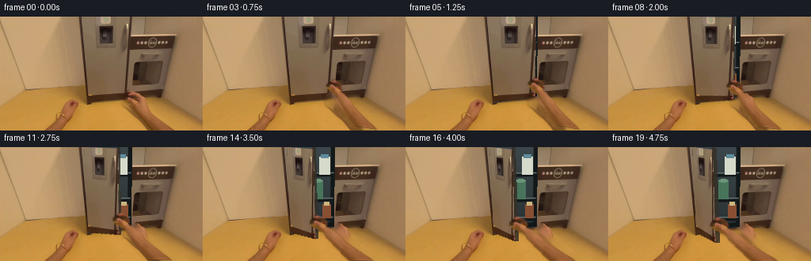
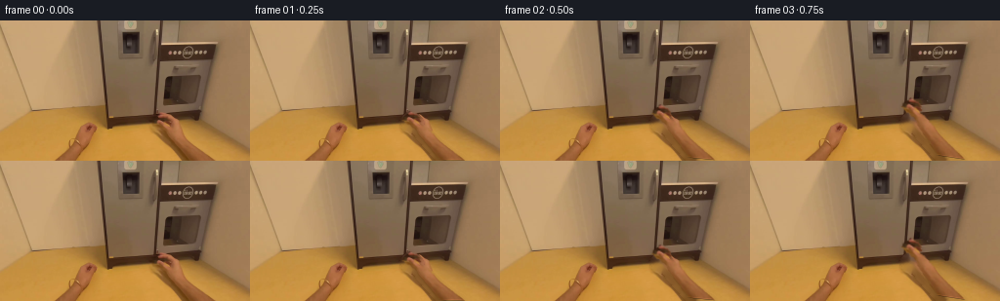

CODING AGENTS AS PIXEL WORLD MODELS
traex/GPT-5.6-Sol · common50_0020
点击播放 · 原生 RGB 像素
逐轮保存的候选
回放视频、检查图与代码变化。
每份候选均可单独播放。实际图片检查记录在下方工具轨迹中。
候选 01播放与检查图
点击播放 · 原生 RGB 像素

展开代码变化
--- 上一保存版本
+++ 本次保存版本
@@ -0,0 +1,168 @@
+from pathlib import Path
+import json
+import numpy as np
+import cv2
+from PIL import Image
+import artifact_io
+
+CASE = Path(__file__).resolve().parent
+W, H = 256, 144
+
+
+def smoothstep(x):
+ x = np.clip(x, 0.0, 1.0)
+ return x*x*(3.0-2.0*x)
+
+
+def over(dst, src, alpha):
+ a = np.clip(alpha.astype(np.float32), 0, 1)[..., None]
+ return np.clip(src.astype(np.float32)*a + dst.astype(np.float32)*(1-a), 0, 255).astype(np.uint8)
+
+
+def make_hand_alpha(im):
+ # Tight silhouette encompassing only the visible right hand and forearm.
+ outer = np.array([(149,103),(153,99),(158,96),(164,95),(169,98),(173,102),
+ (175,107),(180,111),(182,115),(191,121),(201,128),(213,135),
+ (230,143),(196,143),(186,137),(179,130),(174,123),(168,116),
+ (163,112),(157,110),(151,107)], np.int32)
+ mask = np.zeros((H,W), np.uint8)
+ cv2.fillPoly(mask, [outer], 3) # probable foreground
+ # Confident skin-colored central stroke, used to keep GrabCut on the arm.
+ sure = np.array([(157,102),(162,99),(168,102),(171,108),(178,114),(187,121),
+ (199,130),(217,141),(203,141),(191,134),(181,126),(174,117),
+ (166,108),(158,106)], np.int32)
+ cv2.fillPoly(mask, [sure], 1)
+ bgd = np.zeros((1,65), np.float64); fgd = np.zeros((1,65), np.float64)
+ cv2.grabCut(im, mask, None, bgd, fgd, 5, cv2.GC_INIT_WITH_MASK)
+ binary = ((mask == 1) | (mask == 3)).astype(np.uint8)
+ # Keep components touching the definite foreground, suppress tiny flecks.
+ n, labels, stats, _ = cv2.connectedComponentsWithStats(binary, 8)
+ keep = np.zeros_like(binary)
+ for k in range(1,n):
+ if stats[k, cv2.CC_STAT_AREA] > 25 and np.any((labels==k) & (mask==1)):
+ keep[labels==k] = 255
+ # Very slight antialiasing, without a floor-colored halo.
+ return cv2.GaussianBlur(keep, (3,3), 0.55).astype(np.float32)/255.0
+
+
+def similarity_from_points(src_a, src_b, dst_a, dst_b):
+ sa=np.array(src_a,float); sb=np.array(src_b,float)
+ da=np.array(dst_a,float); db=np.array(dst_b,float)
+ vs=sa-sb; vd=da-db
+ scale=np.linalg.norm(vd)/max(np.linalg.norm(vs),1e-6)
+ ang=np.arctan2(vd[1],vd[0])-np.arctan2(vs[1],vs[0])
+ c,s=np.cos(ang)*scale,np.sin(ang)*scale
+ A=np.array([[c,-s],[s,c]],float)
+ t=db-A@sb
+ return np.array([[A[0,0],A[0,1],t[0]],[A[1,0],A[1,1],t[1]]],np.float32)
+
+
+def cavity_image(im):
+ """A subdued, cold refrigerator interior that sits behind the moving door."""
+ out=im.copy()
+ poly=np.array([(106,0),(166,0),(165,100),(111,108)],np.int32)
+ m=np.zeros((H,W),np.uint8); cv2.fillPoly(m,[poly],255)
+ yy,xx=np.mgrid[0:H,0:W]
+ # Dark blue-gray recess, gently lit from the top.
+ light=np.clip(1.0-yy/155.0,0,1)
+ base=np.zeros_like(im)
+ base[...,0]=(32+28*light).astype(np.uint8)
+ base[...,1]=(39+32*light).astype(np.uint8)
+ base[...,2]=(41+34*light).astype(np.uint8)
+ out[m>0]=base[m>0]
+ # Interior rim and back wall.
+ cv2.line(out,(108,0),(112,106),(74,75,68),3,cv2.LINE_AA)
+ cv2.line(out,(164,0),(163,99),(19,24,25),4,cv2.LINE_AA)
+ cv2.line(out,(111,104),(163,97),(18,23,24),4,cv2.LINE_AA)
+ # Shelves and their highlights.
+ for y,xl,xr in [(35,109,165),(67,110,164),(91,111,164)]:
+ cv2.line(out,(xl,y),(xr,y-1),(20,25,27),3,cv2.LINE_AA)
+ cv2.line(out,(xl,y-2),(xr,y-3),(112,125,123),1,cv2.LINE_AA)
+ # A few dim food containers, visible as the gap widens.
+ cv2.rectangle(out,(147,12),(160,34),(214,218,202),-1)
+ cv2.rectangle(out,(149,9),(158,13),(95,139,156),-1)
+ cv2.rectangle(out,(139,42),(151,65),(72,116,91),-1)
+ cv2.ellipse(out,(145,42),(6,2),0,0,360,(106,148,119),-1)
+ cv2.rectangle(out,(151,72),(161,89),(136,79,51),-1)
+ cv2.rectangle(out,(153,69),(159,73),(205,181,125),-1)
+ # Mask once more so details never leak outside the original opening.
+ final=im.copy(); final[m>0]=out[m>0]
+ return final
+
+
+def door_layer(im, amount):
+ src=np.array([(106,-3),(165,-3),(164,100),(110,107)],np.float32)
+ # The free edge swings toward the camera and left; bottom grows slightly.
+ q0=np.array([106.0,-3.0])
+ q3=np.array([110.0,107.0])
+ free_top=np.array([165.0-34.0*amount, -3.0+3.0*amount])
+ free_bot=np.array([164.0-29.0*amount, 100.0+20.0*amount])
+ dst=np.array([q0,free_top,free_bot,q3],np.float32)
+ M=cv2.getPerspectiveTransform(src,dst)
+ sm=np.zeros((H,W),np.uint8); cv2.fillPoly(sm,[src.astype(np.int32)],255)
+ face=cv2.warpPerspective(im,M,(W,H),flags=cv2.INTER_CUBIC,borderMode=cv2.BORDER_REPLICATE)
+ alpha=cv2.warpPerspective(sm,M,(W,H),flags=cv2.INTER_LINEAR)/255.0
+ # Slim dark door edge on the free side adds depth as it turns.
+ edge=np.zeros_like(im); ea=np.zeros((H,W),np.uint8)
+ p1=free_top; p2=free_bot
+ thickness=1.0+4.0*amount
+ side=np.array([p1,p1+[thickness,1],p2+[thickness,0],p2],np.int32)
+ cv2.fillPoly(edge,[side],(54,49,40)); cv2.fillPoly(ea,[side],220)
+ return face,alpha,edge,ea.astype(np.float32)/255.0,M
+
+
+def transformed_point(M,p):
+ v=M@np.array([p[0],p[1],1.0],np.float32)
+ return (float(v[0]/v[2]),float(v[1]/v[2]))
+
+
+def main():
+ im=np.array(Image.open(CASE/'first_frame.png').convert('RGB'))
+ hand_a=make_hand_alpha(im)
+ hand_rgb=im.copy()
+ # Remove the original right arm only where it is actually segmented.
+ erase=(hand_a>0.08).astype(np.uint8)*255
+ erase=cv2.dilate(erase,np.ones((3,3),np.uint8),iterations=2)
+ clean=cv2.inpaint(im,erase,5,cv2.INPAINT_TELEA)
+ cavity=cavity_image(clean)
+
+ frames=[im.copy()]
+ src_tip=(159.0,101.0); src_base=(225.0,147.0)
+ for i in range(1,20):
+ # Reach for the vertical handle over the first second.
+ reach=smoothstep(i/4.0)
+ # Then pull the door steadily open, easing naturally at both ends.
+ opening=smoothstep((i-3)/16.0)
+ if opening > 0:
+ base=cavity.copy()
+ face,fa,edge,ea,HM=door_layer(im,opening)
+ base=over(base,edge,ea)
+ base=over(base,face,fa)
+ grip=transformed_point(HM,(159.0,81.0))
+ else:
+ base=clean.copy()
+ grip=(159.0,101.0-20.0*reach)
+
+ # Right arm remains attached to the bottom of the egocentric view while
+ # fingers track the handle. A tiny base drift prevents a rigid look.
+ arm_base=(225.0-4.0*opening,147.0)
+ A=similarity_from_points(src_tip,src_base,grip,arm_base)
+ wrgb=cv2.warpAffine(hand_rgb,A,(W,H),flags=cv2.INTER_CUBIC,
+ borderMode=cv2.BORDER_CONSTANT,borderValue=0)
+ wa=cv2.warpAffine(hand_a,A,(W,H),flags=cv2.INTER_LINEAR,
+ borderMode=cv2.BORDER_CONSTANT,borderValue=0)
+ # Soft contact shadow, especially visible during the reach.
+ shadow=cv2.warpAffine(wa,np.array([[1,0,3],[0,1,3]],np.float32),(W,H))
+ shadow=cv2.GaussianBlur(shadow,(7,7),2.0)*0.22
+ dark=(base.astype(np.float32)*0.55).astype(np.uint8)
+ base=over(base,dark,shadow)
+ frame=over(base,wrgb,wa)
+ frames.append(frame)
+
+ frames=np.stack(frames).astype(np.uint8)
+ # Contract: frame zero must be byte-for-byte equivalent in RGB.
+ frames[0]=im
+ artifact_io.save(frames,CASE)
+
+if __name__=='__main__':
+ main()
可观测工具轨迹
实际执行的命令与返回图片。
命令 1exit 0
/bin/bash -lc "cat prompt.txt && printf '\\n---RULES---\\n' && cat GENERATION_RULES.md"
命令 2exit 0
/bin/bash -lc "find . -maxdepth 2 -type f -printf '%p %s bytes\\n' | sort"
命令 3exit 0
/bin/bash -lc "cat task_spec.json && sed -n '1,240p' artifact_io.py"
命令 4exit 0
/bin/bash -lc "python - <<'PY'
from PIL import Image
im=Image.open('first_frame.png')
im.crop((95,0,235,144)).resize((700,720)).save('.tmp/crop.png')
PY"命令 5exit 0
/bin/bash -lc "python - <<'PY'
from PIL import Image
import numpy as np
im=np.array(Image.open('first_frame.png'))
pts=[(160,101),(165,105),(172,111),(181,122),(200,135),(220,142),(155,108),(180,115),(190,125),(150,112)]
for x,y in pts: print((x,y),im[y,x])
PY"命令 6exit 0
/bin/bash -lc "python - <<'PY'
try:
import cv2; print('cv2',cv2.__version__)
except Exception as e: print(e)
PY"命令 7exit 0
/bin/bash -lc "cat > generate.py <<'PY'
from pathlib import Path
import json
import numpy as np
import cv2
from PIL import Image
import artifact_io
CASE = Path(__file__).resolve().parent
W, H = 256, 144
def smoothstep(x):
x = np.clip(x, 0.0, 1.0)
return x*x*(3.0-2.0*x)
def over(dst, src, alpha):
a = np.clip(alpha.astype(np.float32), 0, 1)[..., None]
return np.clip(src.astype(np.float32)*a + dst.astype(np.float32)*(1-a), 0, 255).astype(np.uint8)
def make_hand_alpha(im):
# Tight silhouette encompassing only the visible right hand and forearm.
outer = np.array([(149,103),(153,99),(158,96),(164,95),(169,98),(173,102),
(175,107),(180,111),(182,115),(191,121),(201,128),(213,135),
(230,143),(196,143),(186,137),(179,130),(174,123),(168,116),
(163,112),(157,110),(151,107)], np.int32)
mask = np.zeros((H,W), np.uint8)
cv2.fillPoly(mask, [outer], 3) # probable foreground
# Confident skin-colored central stroke, used to keep GrabCut on the arm.
sure = np.array([(157,102),(162,99),(168,102),(171,108),(178,114),(187,121),
(199,130),(217,141),(203,141),(191,134),(181,126),(174,117),
(166,108),(158,106)], np.int32)
cv2.fillPoly(mask, [sure], 1)
bgd = np.zeros((1,65), np.float64); fgd = np.zeros((1,65), np.float64)
cv2.grabCut(im, mask, None, bgd, fgd, 5, cv2.GC_INIT_WITH_MASK)
binary = ((mask == 1) | (mask == 3)).astype(np.uint8)
# Keep components touching the definite foreground, suppress tiny flecks.
n, labels, stats, _ = cv2.connectedComponentsWithStats(binary, 8)
keep = np.zeros_like(binary)
for k in range(1,n):
if stats[k, cv2.CC_STAT_AREA] > 25 and np.any((labels==k) & (mask==1)):
keep[labels==k] = 255
# Very slight antialiasing, without a floor-colored halo.
return cv2.GaussianBlur(keep, (3,3), 0.55).astype(np.float32)/255.0
def similarity_from_points(src_a, src_b, dst_a, dst_b):
sa=np.array(src_a,float); sb=np.array(src_b,float)
da=np.array(dst_a,float); db=np.array(dst_b,float)
vs=sa-sb; vd=da-db
scale=np.linalg.norm(vd)/max(np.linalg.norm(vs),1e-6)
ang=np.arctan2(vd[1],vd[0])-np.arctan2(vs[1],vs[0])
c,s=np.cos(ang)*scale,np.sin(ang)*scale
A=np.array([[c,-s],[s,c]],float)
t=db-A@sb
return np.array([[A[0,0],A[0,1],t[0]],[A[1,0],A[1,1],t[1]]],np.float32)
def cavity_image(im):
\"\"\"A subdued, cold refrigerator interior that sits behind the moving door.\"\"\"
out=im.copy()
poly=np.array([(106,0),(166,0),(165,100),(111,108)],np.int32)
m=np.zeros((H,W),np.uint8); cv2.fillPoly(m,[poly],255)
yy,xx=np.mgrid[0:H,0:W]
# Dark blue-gray recess, gently lit from the top.
light=np.clip(1.0-yy/155.0,0,1)
base=np.zeros_like(im)
base[...,0]=(32+28*light).astype(np.uint8)
base[...,1]=(39+32*light).astype(np.uint8)
base[...,2]=(41+34*light).astype(np.uint8)
out[m>0]=base[m>0]
# Interior rim and back wall.
cv2.line(out,(108,0),(112,106),(74,75,68),3,cv2.LINE_AA)
cv2.line(out,(164,0),(163,99),(19,24,25),4,cv2.LINE_AA)
cv2.line(out,(111,104),(163,97),(18,23,24),4,cv2.LINE_AA)
# Shelves and their highlights.
for y,xl,xr in [(35,109,165),(67,110,164),(91,111,164)]:
cv2.line(out,(xl,y),(xr,y-1),(20,25,27),3,cv2.LINE_AA)
cv2.line(out,(xl,y-2),(xr,y-3),(112,125,123),1,cv2.LINE_AA)
# A few dim food containers, visible as the gap widens.
cv2.rectangle(out,(147,12),(160,34),(214,218,202),-1)
cv2.rectangle(out,(149,9),(158,13),(95,139,156),-1)
cv2.rectangle(out,(139,42),(151,65),(72,116,91),-1)
cv2.ellipse(out,(145,42),(6,2),0,0,360,(106,148,119),-1)
cv2.rectangle(out,(151,72),(161,89),(136,79,51),-1)
cv2.rectangle(out,(153,69),(159,73),(205,181,125),-1)
# Mask once more so details never leak outside the original opening.
final=im.copy(); final[m>0]=out[m>0]
return final
def door_layer(im, amount):
src=np.array([(106,-3),(165,-3),(164,100),(110,107)],np.float32)
# The free edge swings toward the camera and left; bottom grows slightly.
q0=np.array([106.0,-3.0])
q3=np.array([110.0,107.0])
free_top=np.array([165.0-34.0*amount, -3.0+3.0*amount])
free_bot=np.array([164.0-29.0*amount, 100.0+20.0*amount])
dst=np.array([q0,free_top,free_bot,q3],np.float32)
M=cv2.getPerspectiveTransform(src,dst)
sm=np.zeros((H,W),np.uint8); cv2.fillPoly(sm,[src.astype(np.int32)],255)
face=cv2.warpPerspective(im,M,(W,H),flags=cv2.INTER_CUBIC,borderMode=cv2.BORDER_REPLICATE)
alpha=cv2.warpPerspective(sm,M,(W,H),flags=cv2.INTER_LINEAR)/255.0
# Slim dark door edge on the free side adds depth as it turns.
edge=np.zeros_like(im); ea=np.zeros((H,W),np.uint8)
p1=free_top; p2=free_bot
thickness=1.0+4.0*amount
side=np.array([p1,p1+[thickness,1],p2+[thickness,0],p2],np.int32)
cv2.fillPoly(edge,[side],(54,49,40)); cv2.fillPoly(ea,[side],220)
return face,alpha,edge,ea.astype(np.float32)/255.0,M
def transformed_point(M,p):
v=M@np.array([p[0],p[1],1.0],np.float32)
return (float(v[0]/v[2]),float(v[1]/v[2]))
def main():
im=np.array(Image.open(CASE/'first_frame.png').convert('RGB'))
hand_a=make_hand_alpha(im)
hand_rgb=im.copy()
# Remove the original right arm only where it is actually segmented.
erase=(hand_a>0.08).astype(np.uint8)*255
erase=cv2.dilate(erase,np.ones((3,3),np.uint8),iterations=2)
clean=cv2.inpaint(im,erase,5,cv2.INPAINT_TELEA)
cavity=cavity_image(clean)
frames=[im.copy()]
src_tip=(159.0,101.0); src_base=(225.0,147.0)
for i in range(1,20):
# Reach for the vertical handle over the first second.
reach=smoothstep(i/4.0)
# Then pull the door steadily open, easing naturally at both ends.
opening=smoothstep((i-3)/16.0)
if opening > 0:
base=cavity.copy()
face,fa,edge,ea,HM=door_layer(im,opening)
base=over(base,edge,ea)
base=over(base,face,fa)
grip=transformed_point(HM,(159.0,81.0))
else:
base=clean.copy()
grip=(159.0,101.0-20.0*reach)
# Right arm remains attached to the bottom of the egocentric view while
# fingers track the handle. A tiny base drift prevents a rigid look.
arm_base=(225.0-4.0*opening,147.0)
A=similarity_from_points(src_tip,src_base,grip,arm_base)
wrgb=cv2.warpAffine(hand_rgb,A,(W,H),flags=cv2.INTER_CUBIC,
borderMode=cv2.BORDER_CONSTANT,borderValue=0)
wa=cv2.warpAffine(hand_a,A,(W,H),flags=cv2.INTER_LINEAR,
borderMode=cv2.BORDER_CONSTANT,borderValue=0)
# Soft contact shadow, especially visible during the reach.
shadow=cv2.warpAffine(wa,np.array([[1,0,3],[0,1,3]],np.float32),(W,H))
shadow=cv2.GaussianBlur(shadow,(7,7),2.0)*0.22
dark=(base.astype(np.float32)*0.55).astype(np.uint8)
base=over(base,dark,shadow)
frame=over(base,wrgb,wa)
frames.append(frame)
frames=np.stack(frames).astype(np.uint8)
# Contract: frame zero must be byte-for-byte equivalent in RGB.
frames[0]=im
artifact_io.save(frames,CASE)
if __name__=='__main__':
main()
PY
python generate.py"命令 8exit 2
/bin/bash -lc "python - <<'PY'
from PIL import Image
import numpy as np, hashlib
f=np.array(Image.open('first_frame.png').convert('RGB'))
z=np.load('pixels.npz')['pixels'].transpose(2,0,1)
r=((z[0]>>16)&255).astype(np.uint8); g=((z[0]>>8)&255).astype(np.uint8); b=(z[0]&255).astype(np.uint8)
out=np.stack([r,g,b],-1)
print('shape',z.shape,'frame0_equal',np.array_equal(f,out),'frames',len(list(__import__('pathlib').Path('frames').glob('*.png'))))
# basic temporal stats
ims=np.stack([np.array(Image.open(f'frames/{i:02}.png')) for i in range(20)])
print('dtype/shape',ims.dtype,ims.shape,'mean abs adjacent',np.abs(np.diff(ims.astype(int),axis=0)).mean(axis=(1,2,3)).round(2).tolist())
PY
ffmpeg -y -framerate 4 -i frames/%02d.png -c:v libx264 -pix_fmt yuv420p preview.mp4 >/dev/null 2>&1
ls -lh pixels.npz index.html preview.mp4 inspection.png generate.py"视觉工具实际返回图片 1

视觉工具实际返回图片 2

视觉工具实际返回图片 3

视觉工具实际返回图片 4

保存候选 1 份；完成命令 8 次；可验证图片返回 4 张。原始 API 响应与完整日志保留在本地。